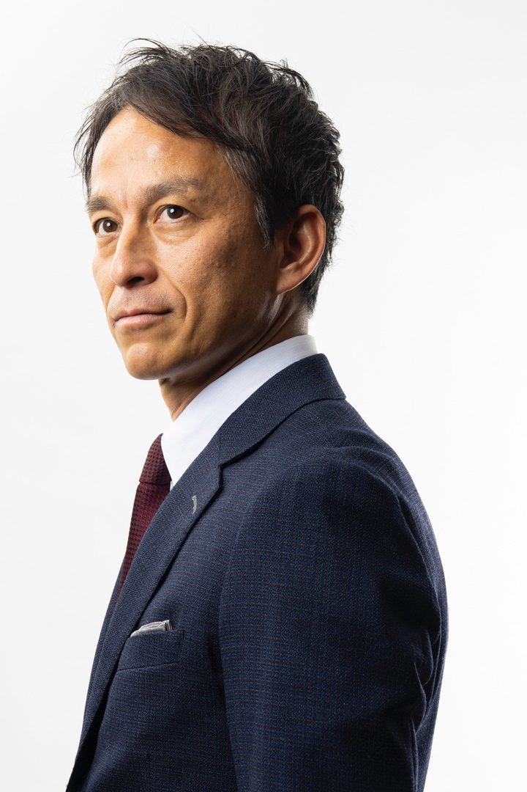

取り組みます
市民協働支援センターを設置します。市民まつりに代わる「新しい交流の場」となるイベントを開きます
政策2026
新しい小金井へ、第2章
みんなでつくろう！
次の4年間で取り組む政策をまとめました。
人が育ち、動き、つながる。にぎわいと挑戦が生まれ、まちの未来を創る

挑戦は、止めない。
小金井市長白井とおる
すべての分野に共通する基本姿勢
市民協働・若者の参加・多世代の交流を、すべての分野で
どの分野の政策も、市民のみなさんと一緒に進めます。市民協働、若者が地域に関心を持つきっかけづくり、市民参加型の取り組みは、一つの分野の政策ではなく、すべての分野、すべての事業に共通する基本姿勢です。
市役所の中でも、繰り返し伝えてきました。
背景には、市民活動の担い手の高齢化があります（上の図）。
地域の人材を育てる
次の担い手を生む
世代をこえた交流を広げる
市民協働支援センターを設置します。市民まつりに代わる「新しい交流の場」となるイベントを開きます
市民が使いみちを提案し、投票で選ぶ「市民参加型予算」の実施を検討します
インターネットで広く寄付を募る「クラウドファンディング」を積極的に使い、みんなで市民サービスを良くします
若者の声を市政に活かし、地域の交流が進むようにします
小金井市気候市民会議を開催
若者を中心に、無作為抽出で約30名の市民が参加。3回の会議で話し合い、市長へ提言書を提出しました（2025年度）。2026年度は、若者に特化した「わかもの気候市民会議」を開催予定です。
中学生サミット・若者MIRAIトークの開催
子ども・若者が意見を表明する機会をつくり、その声を反映する仕組みを検討するために実施。中学生サミットは「小金井（しょうがねい）を変えちゃう人の会」として、2026年度まで続けています。
インクルーシブ公園整備事業「play here」
3年間かけて、当事者や地域の関係者など多くの方から話を聞いて進めました。栗山公園、梶野公園、三楽公園の整備工事が完了。誰でも「ここで遊ぼう」を実現する取り組みを続けています。
はけの森美術館で市民結婚式「シヴィルマリッジ」を実施
総合学院テクノスカレッジと協働。学生が中心になって企画・運営しました（2026年2月）。
「こがねいデジタル平和資料館」WEBを公開
協働事業提案制度で、市民団体と協働して作成。2025年3月に公開しました。
7つの基本政策
子どもと若者の未来をひらくまち、小金井
健康でつながって暮らせるまち、小金井
安心して暮らせるまち、小金井
人と人がつながり、新しいことが生まれるまち、小金井
ちがいを力に換えるインクルーシブなまち、小金井
豊かな自然を、未来へつなぐまち、小金井
黄色の帯と印は、市民のみなさんと一緒に進める取り組みです。
防災・まちづくりの拠点である新庁舎及び（仮称）新福祉会館については、これまでの規模や機能を見直し、早期実現に向け取り組みます。
国や都とも連携し、家計への負担軽減とともに、地域事業者の事業継続支援を実施します。
黄色の印は、市民のみなさんと一緒に進める取り組みです。
あなたに関係する政策を見る
42件を表示しています
子どもと若者の未来をひらくまち、小金井
1つの学童保育所に子どもが多くなりすぎた状態（大規模化）を解消します
5歳児健診を始めます。妊娠がわかったときから、切れ目なく支援します
これまでの4年
母子健康手帳アプリを導入
妊娠・成長の記録、予防接種の管理、母子保健の一部事業のオンライン予約などができるアプリを、2026年度に導入。
保育施設で保育の質を保ち、高めるための取り組みを進めます
これまでの4年
認可保育所などへの、市独自の指導検査体制を構築（2026年度）
ベビーシッター利用への補助や、朝の時間帯の小学生の居場所づくりを検討します
部活動を地域に広げます。大学・専門学校などとの連携を強めます。学校のトイレの改善を進めます
これまでの4年
小中学校トイレの洋便器化 80％を前倒し達成
子どもたちが学ぶ場所である学校の教育環境を充実させるとともに、地域の交流、防災、子育てなどにも活かせる場所にします
不登校の子どもとその家庭、文字の読み書きに困難がある子どもなどに、学びの支援をします
教育相談や就学相談を充実させます。学校に行きづらい子どもが、自分に合った学び方で通える学校（学びの多様化学校）の設置を検討します
若者の居場所や自習スペースを増やします
ティーンズ会議を開くなど、若者の声を市政に活かし、地域の交流が進むようにします
健康でつながって暮らせるまち、小金井
自宅で受ける医療と介護の連携を充実させます。認知症の予防と、地域での見守りの体制をつくります
公園や公共施設を、交流の場として活用します
市内各所にベンチを増やし、歩いて楽しめるまちにします
コミュニティバス（CoCoバス）の路線を維持し、利用を促します
東小金井駅にも公衆喫煙所を設け、たばこを吸う場所を分けて、吸わない人が煙を吸わずに済むようにします（受動喫煙の防止）
大人も子どもも、世代をこえていっしょに学び、交流できる、年齢を問わず学び続けられる教育（生涯教育）の機会を充実させます
スポーツと芸術文化を盛んにし、心の豊かさと人のつながりをつくります
安心して暮らせるまち、小金井
地域の防犯力を高めるため、地域ぐるみの見守りの連携を強めます
これまでの4年
防犯機器購入補助事業を開始
家庭などで防犯機器を設置する際の補助事業を、2025年度に続き2026年度も実施。
住民が自分たちで防災に取り組む組織（自主防災組織）を増やし活動を支援します
災害のときのトイレ対策を充実させます
これまでの4年
防災用トイレトラック導入
大規模災害時の避難所などの衛生環境を守るため、災害用トイレトラックの導入を決定。全国で相互にトイレトラックを派遣し合う「災害派遣トイレネットワークプロジェクト」に参加します。
災害のときの支援について、民間や自治体との間で協力を約束する取り決め（連携協定）を増やします
これまでの4年
桜川市、長久手市との災害相互応援協定締結
大規模災害時に相互に支援し合う協定を、茨城県桜川市と締結（2024年）。同様の協定は6市目です。
自転車の活用計画をつくります。自転車がかかわる事故を減らすため、啓発活動を強めます
人と人がつながり、新しいことが生まれるまち、小金井
事業のアイデアを競うコンテスト（ビジネスアイデアコンテスト）を開くなど、東小金井を「チャレンジを応援するまち」にします
武蔵小金井駅北口の東側の地区で、土地と建物をまとめて建てかえる事業（市街地再開発事業）を進めます
まちの元気を生む、商店街をにぎやかにする取り組み（商店街活性化）の支援をします
東小金井駅北口でまちづくりに使う土地（まちづくり事業用地）の活用について、検討を始めます
新しく小金井に転入した方に向けた、歓迎（ウェルカム）イベントを開きます
ちがいを力に換えるインクルーシブなまち、小金井
障害は社会の側がつくり出している、という考え方への理解を広げます。就労支援を充実させます
障害のある子も一緒に遊べる公園づくり（みんなの公園づくりプロジェクト「play here」）を進めます
これまでの4年
インクルーシブ公園整備事業「play here」
3年間かけて、当事者や地域の関係者など多くの方から話を聞いて進めました。栗山公園、梶野公園、三楽公園の整備工事が完了。
国籍や文化のちがう人がともに暮らすまちづくり（多文化共生）に取り組む体制を強めます
市の組織や会議で、男女の人数のかたよりを改善します
これまでの4年
市政初の女性副市長が就任
2025年6月、小金井市政で初めての女性副市長が就任しました。
ペットとともに暮らせる社会（共生社会）に向けた取り組みを進めます
豊かな自然を、未来へつなぐまち、小金井
東京都が計画する道路（都市計画道路3・4・11号線）をつくる際に課題となる、はけと呼ばれる崖の地形（国分寺崖線）や野川の自然環境への影響を、できるだけ小さくするよう都に求めていきます
小金井市の豊かな水・みどりを守り、活かします
まちの中の農業（都市農業）を守るため、国や都との連携を強めます
ごみの分別をわかりやすくします。生ごみの資源化、リサイクル・リユースを進めます
これまでの4年
生ごみ資源化モデル事業を実施
家庭の生ごみ（野菜や果物のへた・芯・皮など）を回収して堆肥にするモデル事業を、2025年から実施。2026年度は拠点を拡充。
気候変動の問題について若者が話し合う「わかもの気候市民会議」を続けます
これまでの4年
小金井市気候市民会議を開催
若者を中心に、無作為抽出で約30名の市民が参加。3回の会議で話し合い、市長へ提言書を提出しました（2025年度）。
変わる市役所。人材育成、外部人材・DX＆AI徹底活用、稼ぐ自治体への転換
デジタル技術やAIを使いこなして、オンライン申請をさらに広げ、市民がサービスを使いやすくし、職員の働き方を変えます（DX・AIの徹底活用）
職員を育て、確保するための新たな戦略をつくります
人事交流を増やし、副業として働く人材（副業人材）の活用を検討します
職員が地域で活躍することを応援します
補助金や市独自の事業を見直し、毎年決まって出ていくお金が増えて自由に使えるお金がなくなる状態（財政の硬直化）を防ぎます
市の施設を置きなおすこと（再配置）を具体的に進めます。将来的な施設の見直しや、施設をまとめたり廃止したりすること（統廃合）も含めた検討を始めます
有価証券運用や、行政財政資源の有効活用、広告収入などで、市が自ら収入を増やす「稼ぐ」自治体に変えます